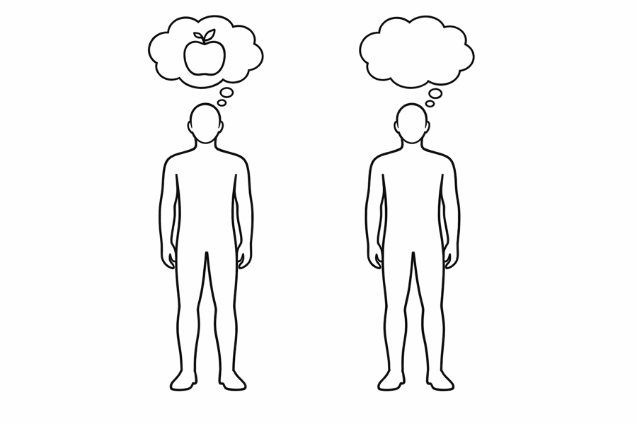

「なぜ」が残る問い
1994年4月、アリゾナ州トゥーソンTucson アリゾナ州第2の都市で、アリゾナ大学の所在地。1994年にここで開かれた「Toward a Science of Consciousness」が、学際的な意識研究の大規模会議の先駆けとなった。以降、隔年でこの地で続いている。 。初めて開かれた「意識の科学」の大規模な国際会議の壇上に、27歳のオーストラリア人哲学者が立っていた。彼は、それまで研究者たちが「意識」と呼んできたものを、静かに二つに切り分けて見せた。
ひとつは、知覚・注意・記憶の統合・言語報告といった「どう動いているか」を問う問題群。これらは難しいが、原理的には神経科学で解ける。もうひとつは——脳のそうした機能が、なぜ体験を伴って 起こるのか、という問い。前者をイージープロブレム 、後者をハードプロブレム と彼は呼んだ。翌年、この命名を軸にした論文が公刊されると、言葉は一気に広まった。以来30年、この区別は消えずに残っている。
EASY PROBLEMS
機能の問い
・刺激の弁別
・情報の統合
・行動の制御
・自己状態の報告
・注意の焦点化
→ 脳の仕組みで説明できる
HARD PROBLEM
体験の問い
なぜ、機能が
「感じ」を伴って
起こるのか
→ 説明のギャップが残る
?
Fig. 1 — チャーマーズによる問題の切り分け(1995)
切り分けの切れ味はこうだ。たとえば「痛みの機能」は説明できる。組織が損傷すると感覚神経が発火し、脊髄を経て脳幹脳幹(brain stem) 大脳と脊髄をつなぐ部分。延髄・橋・中脳の総称で、呼吸・心拍・覚醒など生命維持の基本機能を司る。上行性の感覚信号と下行性の運動信号の中継地点でもある。 ・視床視床(thalamus) 脳の中央にある卵形の核集合。嗅覚以外のあらゆる感覚情報が、大脳皮質へ届く前にここを必ず経由する「感覚の玄関」。意識の神経相関の候補として重視されている。 ・体性感覚野体性感覚野(somatosensory cortex) 頭頂葉にある皮質領域。触覚・痛覚・温度覚・体の位置感覚(固有感覚)を処理する。身体の各部位に対応する「体のマップ」が描かれている(ペンフィールドのホムンクルス)。 へ届き、行動を引き起こし「痛い」と報告させる。この因果の鎖はすべて物理的に追える。しかし——その鎖のどこにも、痛さそのもの が混じっているようには見えない。
赤い光の波長を脳が処理する仕組みを、分子レベルまで書き切ったとしよう。それでも「赤の赤さクオリア 主観的体験の質そのもの。赤い物を見るときの「赤という感じ」、痛みの「痛さ」など、機能や構造の記述からは取り出せない私秘的な質のこと。 」がなぜそこにあるのか、という問いには一言も答えていないように感じられる。ハードプロブレムの核は、この「いくら物理を足しても、体験が言葉に立ち上がらない」という直感に尽きる。
"Why is all this processing accompanied by an experienced inner life at all?"
なぜ、これらすべての処理が、体験された内的生に伴って 起きているのか?
— David Chalmers, 1995
よくある誤解
「難しい問題」というから、イージープロブレムよりも、ただ難度が高い 問題のことだろう。
実際は
難度ではなく種類 が違う。機能の問い(easy)は物理的説明と同じ土俵にあるが、体験の問い(hard)はその土俵の外にある、とチャーマーズは主張した。
よくある誤解
脳科学が進めば、いずれ自然に解ける問題だ。時間の問題に過ぎない。
実際は
それも一つの立場だが、その主張自体が論争の只中にある。進歩しているのはイージープロブレム側で、ハード側は進歩の指標がそもそも何なのか 、いまだ合意がない。
よくある誤解
宗教や神秘主義の話で、きちんとした科学の対象ではない。
実際は
提唱者は分析哲学者 。議論は神経科学・情報理論・数理モデルを用いて行われる。神秘的なのはテーマではなく、「説明できない」という主張の強さ の方である。
物理を足しても、体験は増えない
ギャップを言葉で伝えるのは難しい。だから、送信と検証の実験 をひとつ用意した。あなたが今この瞬間見ている「赤の赤さ」——それを受信者に転送する手段を、物理的に全部試してもらう。そのあと、届いたかどうかを検証するテストも、全部試せる。
Interactive — 赤さを転送せよ
物理事実を全部送り、外から検証する。何が残るかを確かめる
あなたの手元には、この赤 の体験がある。それを、まだ色を見たことがない受信用のロボット に転送したい。下の5つの物理的手段を順に試し、そのあと本当に届いたかを外部テストで検証する。
Sender
あなた(人間)
赤の赤さを
Receiver
ロボット受信機
物理データは保存できる
01 送信フェーズ — 物理的手段を全部使う
Sender — あなた(人間)
今あなたが見ているこの赤さ
波長データを送る
錐体細胞応答を送る
V4 発火パターンを送る
行動・言語報告を送る
詩的な描写を送る
物理的手段は使い切った。ロボットはあなたが送った物理事実のすべて を手にしている。では、ロボットが「赤の赤さ」まで受け取ったかは——外から確かめられるか? 下の検証テストを全部試してみる。
02 検証フェーズ — ロボットを外から調べる
ロボットに「赤の赤さ」が届いたか——外部テストで差分の検出を試みる。あなた(人間)と区別できるなにかが見つかるだろうか。
実行済みテスト 0 / 6
結果 — ハードプロブレム
送信は5手段すべて完了。検証は6テストすべて差分 0 。体験した かは、最後まで確かめられなかった。物理的事実をすべて揃え、外部テストをすべて実行しても、体験の存在は物理的に確定しない 。ハードプロブレム ——物理と体験の間にある、埋められるかどうかすらわからない構造的な亀裂である。
最初からやり直す
「送る」側も「検証する」側も、どちらも物理で閉じていた。でも体験は、その外側のどこかにある——あるいは、その内側のどこにもない。チャーマーズの出発点はここだ。「もっと足せば埋まる」という希望は1990年代以降多くの研究者が試み、そして「本当に埋まっているのか」の議論は今も続いている。
ギャップの正体を、図で見る
1983年、哲学者 ジョセフ・レヴァインJoseph Levine 米国の心の哲学者。1983年の論文「Materialism and Qualia: The Explanatory Gap」で「説明のギャップ」という概念を導入した。 が、この直感に名前を与えた——「説明のギャップ 」。どれだけ物理的事実を揃えても、なぜ体験が立ち上がるかは演繹 できない、という構造的な裂け目のことだ。
EXPLANATORY GAP
説明のギャップ
PHYSICAL
物理の語彙
神経発火
情報処理
機能の記述
PHENOMENAL
体験の語彙
赤の赤さ
痛みの痛さ
体験そのもの
×
物理の語彙をどれだけ精密にしても、体験の語彙には演繹できない
Fig. 2 — 説明のギャップ(Levine 1983)
この直感をさらに鋭く突いたのが、1974年の トマス・ネーゲルThomas Nagel 米国の哲学者。1974年の論文「コウモリであるとはどのようなことか」で、主観的視点の還元不可能性を論じた。 の論文「What Is It Like to Be a Bat? 」である。コウモリは超音波反響定位で世界を感じている。その神経回路は書き切れるだろう。しかし「コウモリであることは、どのように感じられるか」は、外側からの記述では決してたどり着けない。主観的な「〜であること」は、客観的記述の外にある。
Thomas Nagel(1937–)
Philosopher
ニューヨーク大学の哲学者。1974年の論文「コウモリであるとはどのようなことか」は、意識を客観的に還元する試みへの古典的な反論として今も引かれる。物理主義を否定せず、しかし「何かが欠けている」と言い続けた人。
Photo: Jmd442 / CC BY-SA 3.0 , via Wikimedia Commons(リサイズ済み)
Joseph Levine(1952–)
Philosopher
マサチューセッツ大学アマースト校の哲学者。1983年に「説明のギャップ」という言葉を鋳造。存在論的主張(意識は物理を超える)と認識論的主張(物理だけでは説明できない)を区別し、後者に注力した。
チャーマーズはこのギャップを、ひとつの思考実験で可視化した。哲学的ゾンビphilosophical zombie あなたと原子単位で物理的にまったく同じだが、内側に何の体験も伴わない存在。想像可能であれば、物理だけでは意識を決定できないことになる——というチャーマーズの論法のための装置。 と呼ばれるものだ。あなたと原子単位で区別がつかず、同じ脳回路が同じように動き、同じ言葉で「赤は鮮やかだ」と報告する。ただ一点だけが違う——内側には、なにもない 。
あなた
神経発火 同一
行動 同一
言語報告 「赤が見える」
機能 完全に一致
内側の「赤さ」 ある
vs
哲学的ゾンビ
神経発火 同一
行動 同一
言語報告 「赤が見える」
機能 完全に一致
内側の「赤さ」 なし(想定)
この装置のポイントは、ゾンビが存在する と主張することではない。「矛盾なく想像できる 」だけで十分なのだ。もし想像可能なら、物理の事実がすべて決まっていても意識の事実は自動的には決まらない——という論理が通る。批判する側は「いや、本当はちゃんと想像できていない」と応戦する。論争は今も止まない。
"Why should physical processing give rise to a rich inner life at all? It seems objectively unreasonable that it should, and yet it does."
なぜ物理処理は、そもそも豊かな内的生を生み出すのか。そうなる客観的必然性はないように思える——にもかかわらず、現にそうなっている。
— David Chalmers, Facing Up to the Problem of Consciousness , 1995
問いの強度ゆえに、応答は一つに収束しなかった。「意識とは何か、物理と体験のギャップをどう扱うべきか」 ——この中心的な問いに対して、現代の論者はおおむね四つの立場に分かれて拮抗している。
Position 01
幻想主義
Dennett, Frankish
「体験」という独立した何かは存在せず、脳が自分の状態を誤って報告しているだけ。ギャップは錯覚 。機能を完全に書けば、残るものは何もない。
Position 02
物理主義(還元派)
Crick, Koch(初期)
意識は脳の物理プロセスそのもの。まだ記述が足りないだけで、いずれ特定の神経相関(NCC) が見つかれば、説明は完了する。
Position 03
自然主義的二元論
Chalmers
物理は閉じているが、それに加えて 体験は自然の基本要素として認める必要がある。電磁気を物理に加えたのと同じ構造の拡張。
Position 04
汎心論
Goff, Strawson
体験の原型は、物質の最小単位にすでにある。脳で突然立ち上がるのではなく、もとから在る微小な体験 が統合されて私たちの意識になる。
どの立場も一長一短を持つ。幻想主義は、いま痛みを感じている自分を「錯覚」と呼ぶ直感の強い抵抗を受ける。還元派は神経相関を特定できても「なぜそれに伴って 体験があるのか」という一段上の問いに答えられない。自然主義的二元論は自然法則を増やしすぎると批判される。汎心論は「原子に体験がある」という主張の奇妙さを呑み込まねばならない。
一方、神経科学側でも理論化の努力は進んできた。代表が2つある。統合情報理論Integrated Information Theory (IIT) トノーニ(Tononi)らが2004年から発展させた意識の理論。「統合された情報量 Φ(ファイ)」が意識の定量化の指標であり、この値が体験の強度と構造を決めるとする。 (IIT、Tononi 2004)は、意識を「Φ(ファイ)」という統合された情報量 で定量化しようとする理論。システムがどれだけ「部分に分解できない一つの全体として情報を持つか」を数値化し、それが高いほど豊かな体験が伴うと主張する。もう一つがグローバル・ニューロナル・ワークスペース理論Global Neuronal Workspace Theory (GNWT) デアンヌ(Dehaene)らの理論。前頭前野を中心とする広域ネットワークが情報を「ブロードキャスト」することで意識的アクセスが生じる、とする。 (GNWT、Dehaene)で、こちらは意識を情報の広域ブロードキャスト として捉える。前頭前野を中心とする脳全体のネットワークに情報が「放送」された瞬間、それが意識に上る、という枠組みだ。
2025年4月、両理論の予測を同じデータで敵対的に検証する 大規模共同研究の結果が Nature に掲載された。どちらも部分的に支持されたが、どちらも決定打にならなかった。「意識はどう発生するか」の答えは、今なお出ていない。
問いの系譜
1641
デカルト「我思うゆえに我あり」
思考する精神(res cogitans)と延長する物体(res extensa)の二元論を体系化。以後の議論の前提が敷かれる。
1867
デュ・ボア=レイモン「無知と、無知のまま」
ドイツの生理学者が「Ignorabimus(我々は知らない、そして知らないだろう)」を宣言。意識は自然科学の限界の外にあると述べた。
1974
ネーゲル「コウモリであるとは?」
客観的記述から主観的視点は取り出せない、と論じた論文。現代の問題設定の起点のひとつ。
1983
レヴァイン「説明のギャップ」
Pacific Philosophical Quarterly 誌に論文「Materialism and Qualia」を発表。名指しされた裂け目が、のちに神経科学者にも共有される。
1991
デネット『意識の説明』
機能の完全な記述が説明のすべてである、という反対方向からの包括的著作。クオリアは存在しない、と宣言した。
1995
チャーマーズ「ハードプロブレム」論文公刊
"Facing Up to the Problem of Consciousness" が Journal of Consciousness Studies に掲載。前年のトゥーソン会議での発表を論文化。名前がついた。
1996
『The Conscious Mind』刊行
チャーマーズが著書で哲学的ゾンビの思考実験を中心に、自然主義的二元論を体系化。書評欄は賛否で割れた。
2004
統合情報理論の提案
トノーニが意識を「統合された情報量 Φ」として数理化する理論を発表。定量化という方向からの応答が始まる。
2015
ストッパード『The Hard Problem』
劇作家トム・ストッパードが国立劇場(ロンドン)でこの問題を題材にした戯曲を初演。哲学の語彙が演劇に渡った。
2025
IIT vs GNWT、敵対的共同研究
Nature に結果が掲載。両理論を同じデータで検証する初の大規模試み。部分的支持が半々で、決着には至らなかった。
体験という壁

物理的に同一の2体。違うのは——内側の体験の有無だけ。
ハードプロブレムが提起したのは、「脳が分からない」ではなく「物理の語彙では体験の語彙に届かない 」という構造的な非対応である。物理は三人称の記述で動く。体験はそもそも一人称の側にしかない。三人称で一人称を書こうとすると、何かが落ちる——その「何か」の輪郭を問い続けてきたのが、この30年だ。
同じ裂け目を、別の角度から見たのが『マリーの部屋 』の思考実験である。白黒の部屋で色のすべての物理を学んだマリーが、初めて赤いトマトを見たとき、何か新しいこと を学ぶのか。学ぶとすれば、物理の外に情報があったことになる。マリーが出会ったその「何か」こそ、チャーマーズが「説明のギャップ」と呼んだものと同じ場所を指している。
文化・作品への登場
Tom Stoppard『The Hard Problem』(2015)
英国の劇作家による戯曲。ロンドンの国立劇場で初演。神経科学と進化心理学が支配する研究所で、主人公が「脳の活動と、善悪を感じる心とはどう繋がるのか」を問い続ける。
『Ex Machina』(2014)
アレックス・ガーランド監督の映画。AI の行動が人間と区別できないとき、その内側に「体験」があるかをどう判定できるか、という哲学的ゾンビの問いを物語化した。
『ウエストワールド』(2016–)
HBO のドラマシリーズ。アンドロイドが自己意識を獲得する過程を、内的独白(「迷宮」)の図を用いて描く。シーズンを通じて、機能と体験の区別が物語の駆動力になる。
それでも、この問題が解かれる 日は来るかもしれない。物理の語彙が拡張されるかもしれない。あるいは、ギャップを「問うべきでない誤った問い」として放棄する日が来るかもしれない。どちらに転んでも、いまこの瞬間に赤を見ているあなたの「赤さ」が、科学の説明のどこにも書かれていない——その小さな事実は、どうしても残り続ける。
原著論文 1995
David J. Chalmers — Journal of Consciousness Studies, 2(3): 200–219
「ハードプロブレム」という語を導入し、問題群の切り分けを提案した論文。すべての議論の起点。
原著論文 1974
Thomas Nagel — The Philosophical Review, 83(4): 435–450
主観性の還元不可能性を論じた古典。現代のハードプロブレム議論の思想的下地。
論文 1983
Joseph Levine — Pacific Philosophical Quarterly, 64: 354–361
「説明のギャップ」という概念を初めて明示的に定式化した論文。
書籍 1996
David J. Chalmers — Oxford University Press
哲学的ゾンビの思考実験を中核に、自然主義的二元論の全体像を展開した書籍。
書籍 1991
Daniel C. Dennett — Little, Brown
機能主義・幻想主義の立場からの包括的な反論。ハードプロブレム派と並び読む必要がある古典。
論文 2004
Giulio Tononi — BMC Neuroscience, 5: 42
IIT の最初期の定式化。統合情報量 Φ を導入した。
原著論文 2025
Cogitate Consortium — Nature
IIT と GNWT を同一データで敵対的に検証した初の大規模研究。両理論とも部分的支持に留まった。
入門向け解説 2022
Robert Van Gulick (ed.)
意識をめぐる哲学・科学の主要論点を俯瞰する標準的リファレンス。
📌 この記事について
e. Tamaki
脳と意識 心の哲学 思考実験 クオリア 哲学的ゾンビ